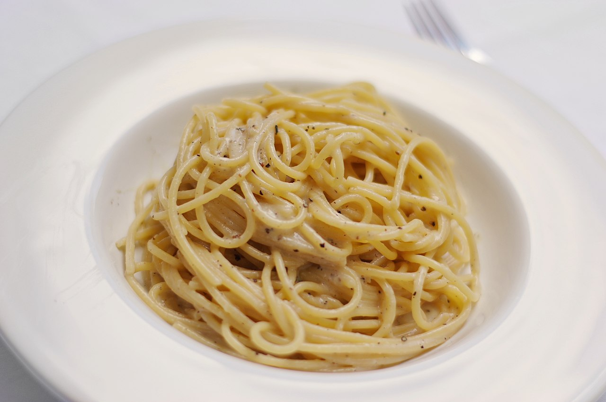

Cacio e pepe

An old recipe of central Italy, based on the classical ingredient that was most avaible in the area: pecorino cheese.
Ingredients for 1 person:
- 100g of spaghetti
- 50g of "pecorino romano"
- A spoonful of peppercorns
- Salt
Preparation
- Bring a large pot of salted water to boil
- Grate the pecorino and put it on the plate
- Throw the pasta into the boiling water
- Crush the peppercorns with a pestle
- Put the pepper in a pan and heat it
- After a couple of minutes, add a little of the pasta cooking water to the pepper
- When the pasta is two minutes away from cooking, add it to the pan with the pepper and thus finish cooking
- Add the hot pasta to the plate with the cheese and mix
Back to recipes